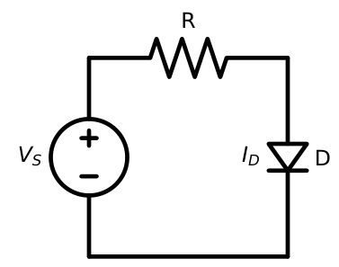
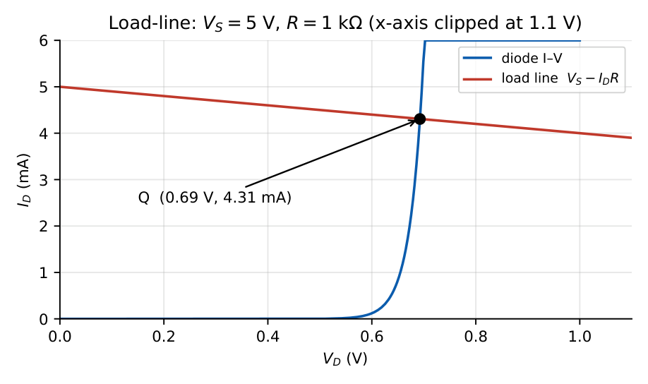
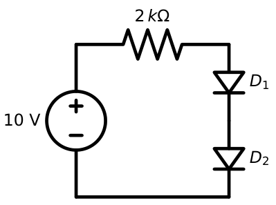
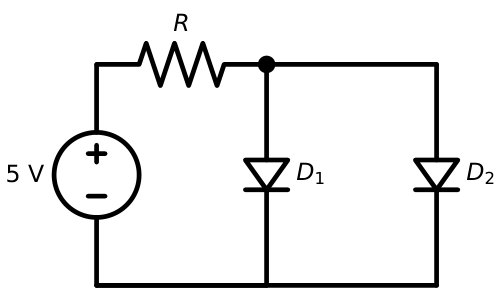
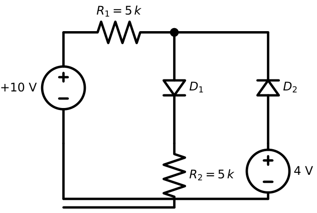
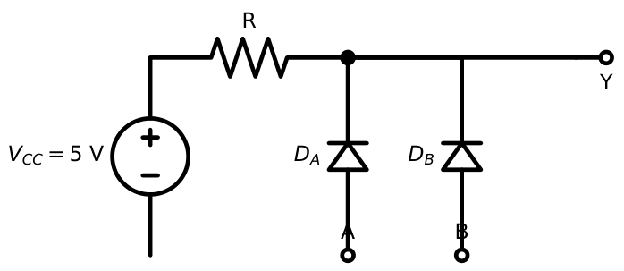

Diode Circuit Analysis
In this chapter
- 2.1 DC operating-point analysis
- 2.2 Load-line analysis
- 2.3 Series and parallel diode circuits
- 2.4 Multiple-diode circuits
- 2.5 Constant-voltage approximation
- 2.6 Piecewise-linear approximation
- 2.7 Small-signal analysis
- 2.8 Diode resistance and sensitivity
- 2.9 Circuit-state determination
- 2.10 Advanced GATE problems
2.1 DC operating-point analysis
The operating point (Q-point) is the pair \((V_D,I_D)\) at which the diode sits with only DC sources acting. A diode is non-linear, so we replace it by a model that is linear in each state and then verify the assumed state.
1. Assume a state for every diode (ON or OFF).
2. Replace ON diodes by a short (ideal) or a \(0.7\) V battery (CV); replace OFF diodes by open circuits.
3. Solve the resulting linear circuit (KVL/KCL).
4. Check that \(I_D>0\) for every ON diode and \(V_D<V_{on}\) for every OFF diode. If not, change the assumption and repeat.

Basic circuit with \(V_S=5\) V, \(R=1\) k\(\Omega\) and a \(0.7\) V diode. Assume ON: \(I_D=(5-0.7)/1\,\mathrm{k}=4.3\) mA \(>0\), consistent. With \(V_S=-5\) V the same assumption gives \(I_D=-5.7/1\,\mathrm k<0\): contradiction, so the diode is OFF, \(I_D=0\), \(V_D=-5\) V.
2.2 Load-line analysis
KVL around the loop gives a straight line, the load line, \(I_D=\dfrac{V_S-V_D}{R}\). The other constraint is the diode’s own I–V curve. The intersection is the Q-point. The load line meets the axes at \(V_D=V_S\) (open circuit) and \(I_D=V_S/R\) (short circuit); its slope is \(-1/R\).

Same circuit, change \(R\) to \(100\ \Omega\). Intercepts: \(5\) V and \(50\) mA. The steeper line meets the diode curve higher, at \(V_D\approx0.76\) V (\(I_D\approx42.4\) mA). Notice \(V_D\) changed only by \(70\) mV while \(I_D\) went up tenfold, the logarithmic behaviour of the diode.
2.3 Series and parallel diode circuits
Series diodes (Figure 2.3): the same current flows in both, so the drops add. With two silicon diodes ON the total drop is \(1.4\) V.


Left circuit: \(10\) V, \(2\) k\(\Omega\), two \(0.7\) V diodes. \(I=(10-1.4)/2\,\mathrm k=4.3\) mA. If \(D_2\) is reversed it blocks: \(I=0\), and the whole \(10\) V appears across \(D_2\).
Parallel diodes share the same voltage, so the current divides in proportion to \(I_s\): \(I_1/I_2=I_{s1}/I_{s2}\). Two identical diodes carry equal currents.
Right circuit: \(5\) V, \(R=1\) k\(\Omega\), identical diodes: total current \(4.3\) mA, each \(2.15\) mA. If \(D_2\) has \(I_s\) four times that of \(D_1\), then \(D_2\) carries four times \(D_1\)’s current: \(3.44\) mA and \(0.86\) mA.
With the constant-voltage model, two ON parallel diodes with different currents look inconsistent (same \(0.7\) V). That is only a limitation of the model; in reality the drops differ by \(V_T\ln(I_{s2}/I_{s1})\) and the current splits accordingly.
2.4 Multiple-diode circuits
Find which diodes conduct, then solve. Consider Figure 2.4: \(D_1\) in series with \(R_2\), and \(D_2\) connected through a \(4\) V source to the same node \(X\).

Assume \(D_1\) ON, \(D_2\) OFF. \(I=(10-0.7)/(5\,\mathrm k+5\,\mathrm k)=0.93\) mA, \(V_X=0.7+0.93\times5=5.35\) V. Check \(D_2\): its anode is at \(4\) V, its cathode at \(5.35\) V, so it is reverse biased (\(-1.35\) V): OFF, consistent. Answer: \(I_{R_2}=0.93\) mA, \(V_X=5.35\) V.
Diode logic. Diodes with cathodes at the inputs and anodes joined at the output form an AND gate (Figure 2.5): the output follows the lowest input plus \(0.7\) V. With anodes at the inputs and cathodes joined to a resistor to ground, one gets an OR gate: \(Y=\max(V_A,V_B)-0.7\).

For the AND gate: \(A=0\), \(B=5\) V \(\Rightarrow\) \(D_A\) ON, \(Y=0.7\) V (logic 0). \(A=B=5\) V: no diode conducts (or negligible), \(Y\approx5\) V (logic 1). \(A=3\) V, \(B=5\) V: \(Y=3.7\) V.
2.5 Constant-voltage approximation
The workhorse model for GATE. Treat every conducting silicon diode as a \(0.7\) V battery whose polarity opposes forward current. Two typical uses: current-limiting resistor for an LED, and simple voltage references.
LED with \(V_f=2\) V must carry \(10\) mA from a \(5\) V supply: \(R=(5-2)/10\,\mathrm{mA}=300\ \Omega\). A silicon diode in series with it adds \(0.7\) V, so \(R=(5-2.7)/10\,\mathrm{mA}=230\ \Omega\).
2.6 Piecewise-linear approximation
Use when the problem gives \(V_{on}\) and \(r_d\) (or two points on the curve). In the ON state replace the diode by \(V_{on}+r_dI_D\).
\(V_{on}=0.6\) V, \(r_d=20\ \Omega\), \(V_S=5\) V, \(R=980\ \Omega\): \(I_D=(5-0.6)/(980+20)=4.4\) mA and \(V_D=0.6+0.088=0.688\) V.
To get \(V_{on}\) and \(r_d\) from two points \((V_1,I_1),(V_2,I_2)\) on the curve, \(r_d=(V_2-V_1)/(I_2-I_1)\) and \(V_{on}=V_1-I_1r_d\).
2.7 Small-signal analysis
When a small AC signal rides on a DC bias: (1) find the DC solution first, (2) compute \(r_d=nV_T/I_D\), (3) short the DC sources, replace the diode by \(r_d\), and (4) solve the AC circuit by voltage division. (Superposition is valid because the small-signal circuit is linear.)
Basic circuit with \(v_S=5+0.1\sin\omega t\) V and \(R=1\) k\(\Omega\). DC: \(I_D=4.3\) mA. \(r_d=26/4.3=6.05\ \Omega\). AC current: \(i_d=0.1/(1000+6.05)=99.4\ \mu\)A peak. AC diode voltage \(v_d=i_dr_d=0.60\) mV. AC output across \(R\): \(99.4\) mV, so the diode has hardly any AC drop.
2.8 Diode resistance and sensitivity
Three different “resistances” appear:
| Name | Definition | Use |
|---|---|---|
| Static (DC) | \(V_D/I_D\) | power dissipation |
| Dynamic (AC) | \(nV_T/I_D\) | small-signal gain, attenuation |
| Bulk/series | \(r_s\) (a few \(\Omega\)) | adds to \(r_d\) at high currents |
Sensitivity. How much does \(I_D\) (or \(V_D\)) change when \(V_S\) changes? From the small-signal model, \(\dfrac{\Delta I_D}{\Delta V_S}=\dfrac1{R+r_d}\) and \(\dfrac{\Delta V_D}{\Delta V_S}=\dfrac{r_d}{R+r_d}\). Since \(r_d\ll R\) in most circuits, \(V_D\) is a stiff, nearly constant voltage.
\(V_S=5\pm1\) V, \(R=1\) k\(\Omega\). \(\Delta I_D\approx1/(1006)=\pm0.994\) mA, \(\Delta V_D=0.994\times6.05\,\Omega=\pm6\) mV. A forward diode thus acts as a \(0.7\pm0.006\) V reference for a \(\pm20\%\) supply swing.
2.9 Circuit-state determination
For circuits with several diodes and sources the guess-and-check procedure can take several passes. Useful tricks:
- Compare the voltages at anode and cathode with all diodes removed. A diode with anode \(>\) cathode \(+V_{on}\) is a candidate for ON.
- The diode with the largest such margin turns ON first; re-evaluate the others after it conducts.
- For \(n\) diodes there are \(2^n\) combinations, but usually only 1–2 need testing.
Repeat Figure 2.4 but with a \(9\) V source instead of \(4\) V. Try \(D_1\) ON, \(D_2\) OFF: \(V_X=5.35\) V \(<9-0.7\), so \(D_2\)’s anode (\(9\) V) exceeds its cathode by \(3.65\) V: it must be ON. Try both ON: \(V_X=9-0.7=8.3\) V. Current in \(R_2\) path \(=(8.3-0.7)/5=1.52\) mA; current from \(R_1=(10-8.3)/5=0.34\) mA; KCL at \(X\): \(I_{D_2}=1.52-0.34=1.18\) mA \(>0\). Consistent: both diodes ON, and the \(9\) V battery supplies current.
2.10 Advanced GATE problems
Q1. In Figure 2.4 (10 V, 5 k\(\Omega\), 5 k\(\Omega\), 4 V source), the current through \(R_2\) is mA. (Si diodes, \(0.7\) V.)
Q2. The diode AND gate above has \(A=3\) V, \(B=1\) V, \(V_{CC}=5\) V. The output voltage is V.
Q3. A diode circuit has \(V_S=10\) V, \(R=1\) k\(\Omega\) and a diode with \(V_{on}=0.7\) V, \(r_d=10\ \Omega\). The diode current is (A) 9.3 mA (B) 9.21 mA (C) 10 mA (D) 9.9 mA.
Q4. Two identical diodes are in parallel, fed from \(5\) V through \(1\) k\(\Omega\). One diode is removed. The voltage across the remaining diode (exponential model, \(V_T=26\) mV) by about (A) increases by 18 mV (B) decreases by 18 mV (C) is unchanged (D) increases by 0.7 V.
Q5. A diode at \(I_D=1\) mA is placed in a circuit with \(R=2.6\) k\(\Omega\) and a \(10\) mV peak AC source in series. The AC voltage across the diode is closest to (A) 26 \(\mu\)V (B) 0.1 mV (C) 0.1 V (D) 10 mV.
Answers: Q1: 0.93. Q2: \(1+0.7=1.7\) V. Q3: \(I=(10-0.7)/1010=9.21\) mA \(\Rightarrow\) (B). Q4: with both, each carries \(2.15\) mA; alone \(4.3\) mA; \(\Delta V=26\ln2=18\) mV, so (A). Q5: \(r_d=26\ \Omega\); \(v_d=10\,\mathrm{mV}\times26/(2600+26)\approx0.1\) mV (B).
- \(V_S=12\) V, \(R=470\ \Omega\), two series Si diodes: current? [22.6 mA]
- A Ge diode (\(0.3\) V) and Si diode (\(0.7\) V) in parallel across a \(5\) V source through \(1\) k\(\Omega\). Which conducts and what is \(I\)? [Ge; 4.7 mA, Si OFF with CV model]
- For the AND gate, find \(Y\) if \(A=B=0\) V. [0.7 V]
- Load-line: \(V_S=3\) V, \(R=300\ \Omega\). Give both intercepts. [3 V, 10 mA]
- Compute \(r_d\) for the circuit of problem 1. [\(26/22.6=1.15\ \Omega\) each]